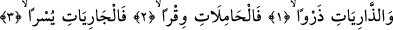
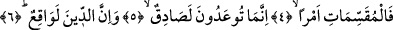

SİZE VAADEDİLEN,
KESİNLİKLE DOĞRUDUR
Bismillâhirrahmânirrahîm
1. Toz atıp savuranlara,
2. Yükünü yüklenenlere,
3. Kolayca süzülenlere,
4. İşi ayıranlara andolsun ki,
5. Size vaadedilen, kesinlikle doğrudur.
6. Ve cezâ mutlaka vuku bulacaktır.
Savurup kaldıranlara (esip bulutları, tozları kaldıran rüzgârlara, yanardağlardan
lavlar püskürten tabîat kuvvetlerine, yaratıkları savuran meleklere). Burdaki vâv kasem
için olup, sonrasındaki kelimeler hazfolunmuş mevsuflarının, yerine geçen sıfatlardır.
Bunun takdiri de “toz-toprağı savuran rüzgârlara kasem olsun” şeklindedir. Rüzgârın
herhangi bir şeyi toz atıp savurması, onu havalandırıp ortadan kaldırmasının ifâde
edilmesinde bu fiil kullanılır.
Tâc’ul-masâdir’de müellif zerv kelimesinin anlamını “bir şeyi kökünden koparmak,
savurmak, dane ile samanın ayrılması için yukarı savurmak” şeklinde vermektedir.
Bundan murad, tozu-toprağı havalandıran, dâneyi samandan ayıran rüzgârlardır.
Kâşifî’nin tefsirinde Kâ’bu’l-Ahbar’ın şöyle dediği rivâyet edilmektedir: “Şâyet
Allah Teâlâ yeryüzüne üçgün rüzgarları göndermese, yeryüzündeki herşey kokar.” Ve
yine aynı tefsirde Avvâm b. Hüşeb’den şu söz de nakledilmiştir: “Güney rüzgarı
cennetten çıkıp cehenneme uğrar ve onun üzerini cennetin bereketi ve esintisi ile kaplar.
Kuzey rüzgârı ise cehennemden çıkıp cennete uğrar ve cennetin serinliği yerine
cehennemin sıcak havasını taşır.” Başka bir rivâyete göre de kuzey rüzgârı Adn
Cennetine uğrar onun güzel kokusu ile (ordaki) sıddıkların kokularını yokeder.
Abdullah b. Şeddâd’dan bildirildiğine göre o şöyle demiştir: “Şüphesiz ki rüzgar,
Allah’ın kudretindendir. Onu gördüğünüz vakit Allah’tan onun hayrını isteyin, şerrinden
de O’na sığının.”
Câbir b. Abdullah (r.a.)’ın şöyle dediği rivâyet edilmektedir: “Öyle bir rüzgâr esmişti
ki neredeyse binekte olanı savurup öldürecekti. Bunun üzerine Rasûlullah (s.a.): “Bu,